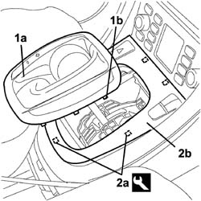
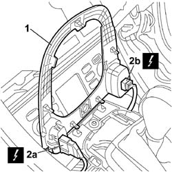
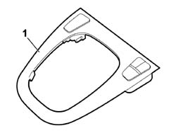

7040A56 SWITCH UNIT IN DASHBOARD - R.R.
- Path
- Procedures > 70 FITTINGS > 7040 BODY INTERIOR FITTINGS AND TRIM > 7040A PASSENGER COMPARTMENT TRIMS > 7040A56 SWITCH UNIT IN DASHBOARD - R.R.
- Kind
- repair procedure (removal / refitting; the operation number is the code)
- Applies to
- all engines; all production periods
- Interactive page
- https://sloeber94.github.io/elrnDB-fCrm/en/#/194001020
Applies to: all engines; all production periods
 Removing
Removing
 Refitting
Refitting- Turn the ignition key to the OFF position.
- Disconnect the negative and positive battery terminals.
Description | Connector | |
|---|---|---|
BATTERY |
1. Manually release the boot (1a) for the gear lever carefully, detaching it from the retainers (1b).
2. Carefully release the retainers (2a) using the special tool and release the switch trim/support (2b) from the housing.
Tool | Description | Function | Validity |
|---|---|---|---|
1878077000 | Knife | Retainer removal |

Applies to: all engines; all production periods
1. Fold the trim over to access the electrical connections
2. Disconnect the electrical connections (2a) and (2b).
Description | Connector | |
|---|---|---|
2a | HAZARD WARNING LIGHTS SWITCH |
Description | Connector | |
|---|---|---|
2b | CONTROLS ON THE TUNNEL |

Applies to: all engines; all production periods
1. Remove the switch trim/support from the trim under the dashboard.

Applies to: all engines; all production periods
Refitting
Removing- Check that the switch trim/support is not damaged.
- Position the trim on the trim under the dashboard.
- Connect the electrical connections.
Description | Connector | |
|---|---|---|
CONTROLS ON THE TUNNEL |
Description | Connector | |
|---|---|---|
HAZARD WARNING LIGHTS SWITCH |
- Position the trim and insert it in the housing, exerting suitable pressure by the mounting points.
- Fit the gear lever boot, exerting suitble pressure on the mounting points.
- Reconnect the negative and positive battery terminals.
Description | Connector | |
|---|---|---|
BATTERY |
Topics linked from this page (3)
Topics that link to this page (21)
- 2125C30 GEAR ENGAGEMENT/SELECTION CABLES - R.R
- 2125C32 GEAR CONTROL LEVER MOUNT - R R
- 2135A10 AUTOMATIC TRANSMISSION MANUAL CONTROL LEVER AND SUPPORT - R + R AND OVERHAUL
- 2135A12 GEAR ENGAGEMENT CABLE - R R
- 3330B02 PEDAL ASSEMBLY - R.R
- 3330B08 PEDAL MOUNT ASSEMBLY - R R AND OVERHAUL WITH FACIA TRIM SUPPORT BEAM REMOVED FOR RIGHT-HAND DRIVE VERSIONS
- 3330B22 BRAKE PEDAL - R+R FOR MANUAL GEARBOX VERSIONS
- 3330B26 CLUTCH PEDAL - R+R
- 3330B38 PEDAL UNIT MOUNT - R.R.
- 5040C10 AIR CONDITIONING CASING - R.R
- 5040C50 AIR CONDITIONING HEATER RADIATOR - R.R.
- 5040C64 A/C EVAPORATOR - R+R
- 5040D18 AIR CONDITIONING CONTROL UNIT - R.R.
- 5040D94 AIR CONDITIONING LEFT UPPER AIR DISTRIBUTION FLAP MOTOR (DEFROST) - R.R
- 5505C10 FRONT CROSSMEMBER WIRING - R.R
- 5505C31 BUILT-IN WIRING UNDER DASHBOARD - R.R.
- 7040A10 DASHBOARD TRIM - R+R
- 7040A60 UNDERDASHBOARD TRIM - R.R.
- 7040A85 R R HANDLE FOR FRONT SEAT FORE AND AFT ADJUSTMENT
- 7040A97 INSTRUMENT PANEL TRIM SUPPORTING CROSSMEMBER - R.R
- 7095E22 SOUND-PROOF PANEL UNDER DASHBOARD SUPPORTING CROSSMEMBER - R.R.